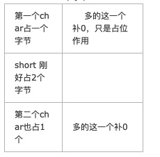

最も簡単な方法、わかりやすい方法で構造体のサイズを計算する。
構造体の計算はバイトアライメントの原則に従う必要がある。
構造体のデフォルトのバイトアライメントは一般的に次の3つの基準を満たす：
- 1) 構造体変数の先頭アドレスは、その最も幅の広い基本型メンバーのサイズで割り切れること；
- 2) 構造体の各メンバーの構造体先頭アドレスに対するオフセット（offset）は、すべてメンバーサイズの整数倍であること。必要に応じてコンパイラはメンバー間にパディングバイトを追加する（internal adding）；
- 3) 構造体の総サイズは、構造体の最も幅の広い基本型メンバーのサイズの整数倍であること。必要に応じてコンパイラは最後のメンバーの後にパディングバイトを追加する（trailing padding）
実はこれらの3つの原則はひとまず置いておいて、私の方法では3つ目だけ覚えておけばいい。つまり構造体のサイズの結果は、メンバーの中で最大のバイト数の整数倍でなければならないということだ。
まず以下で定義された2つの構造体を見てください：
struct { char a; short b; char c; }S1;
struct { char a; char b; short c; }S2;
それぞれプログラムでテストして求めたsizeof(S1)=6 , sizeof(S2)=4。
注意：なぜ構造体メンバーの順序を変えただけで、結果が異なるのでしょうか？
解：
- （1）まずメンバー変数の中で最大のバイト数を見つける。S1 と S2 の場合、最大は short で、2バイトを占める；
- （2）したがって、以降は2バイトを基準とする。つまり、最大でも2バイト単位とし、他はパディングで埋める。下の図では1つのマスが1バイトを表すことに注意；
- （3）そこでまず2つのマスを描き、以降はメンバーの順序を見ながら、毎回2を増加の基準として徐々に増やしていく。

したがって、S1の構造体サイズは2*3=6です。なぜ2番目のcharの余分なバイトを捨てないのかというと、3つ目の原則に従うからです。つまり構造体サイズの結果は、メンバーの中で最大のバイト数の整数倍でなければならないということです。
S1=2*3=6
S2 についても、同じように図を描くが、順序はchar->char->short：

S2=2*2=4
この方法に従って、次のような構造体をもう一度見てみよう：
struct stu1
{
int i;
char c;
int j;
};
明らかに、最大バイト数は4バイトである。順序は int char int：
int は4バイトを占め、char はすでに1バイト占めているので、足りず、その3バイトは余分なパディングとして埋めるしかない。
Stu1=3*4=12
では、変えてみるとどうなる？
struct stu2
{
int i;
int j;
char c；
}；
Stu2=3*4=12
もう一つ見てみよう：構造体のメンバー変数が別の構造体である場合、その構造体の中の別構造体であるメンバーを全体として加算すればよい。
typedef struct A
{
char a1;
short int a2;
int a3;
double d;
};
A=16
typedef struct B
{
long int b2;
short int b1;
A a;
};
一方Bについては、まずA aを考えないでください。つまりA aメンバーを取り除いて構造体Bを計算すると8になります。したがって最後の結果は8+16=24；24が最終結果です。
原文地址：https://www.cnblogs.com/lykbk/archive/2013/04/02/krtmbhrkhoirtj9468945.html